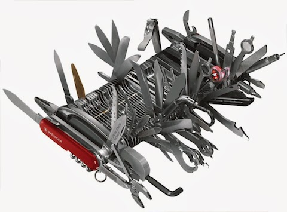

在接着介绍用户体验(UX)的具体方法和实践应用之前，我想，该得先从一个核心的思路心态好好说起，那就是…我们该怎样看「问题」这回事。
说实话，很多时候，我们的问题，其实正正就是还没搅清楚要解决的问题是什么…讽刺吧? :p
更多的，可能只是我们沉溺于解决表面问题的成就感而已。
为什么会这样说？或许接着下来的一些分享，对大家来说，希望会是一个有趣的探索吧…
又是作死的教育制度
由于社会对商业运作的需求和教育制度本身，也更多可能是来自一股国内风气吧，我们都被锻炼出无论如何都要迅速高效的找到法子，只要找到答案，往往就会满足于迅速总结作出结论，感觉这问题都已经彻底解决处理好了。
我们往往被锻炼出无论如何都要迅速高效的找到法子，容易满足于迅速总结作出结论
但，这情况往往很容易让我们陷入了一个假象，太先入为主的把问题定性，没有经过深思熟虑的思考，其实后患无穷。
在学习上，我们面对的问题往往是绝对单一的，教育也没有教晓我们学会怎样去质疑问题本身。但现实上，问题绝非那么绝对，更像迷宫一样，可一层一层向下更深入的追溯下去，没有尽头。
通常太直观仓促所看到的问题，往往都是流于表面上解决方法上的不便，或形式及处理手法上的改变。
而这种表面形式上的解决方案，其实可能更多只是隔靴骚痒，没有一刀刺穿问题的核心要害，解决状况本质上的深层矛盾，因此，也往往让我们白白花了无数力气解决一个并不值得解决的问题。
我们可能花了无数力气，在解决一个并不值得解决的问题
而更甚者，可能大家多少体会过，就是没有深思熟虑的解决办法，往往引申出更多的新问题，变成为了解决问题而解决问题，把问题复杂化，最后不断循环打补丁，跌进万劫不复的深渊。

没有深思熟虑的解决办法，往往引申出更多的新问题
好像上面的道理都说得有点太抽象了吧，或许透过以下三个简单的例子说明一下吧 :p
那里才是问题？
1. 二战英军战机的例子

英国空军部在二次大战期间，曾希望透过对作战回来的受损飞机进行研究分析，以改进加强战机的作战对抗能力。
英国皇家空军就此，把返航的战斗机作出一系列的数据采集，以图表标记出返航的战斗机上的弹着点位置，并最后系统地归纳出不同的损害模式，再针对受损的部位和模式加装钢板和装甲。
这好像是很合理，也很显然而见的做法，对吗？
其实不然~!
同时参与研究的数学家Abraham Wald先生，却有着截然不同的结论。他提出所搜集下来的数据，也都只是能成功返航的战机，纵然受损的部位非常严重也没有被击落的即时风险，也因此推论出在返程飞机上反而没有多少弹孔的位置（也就是座舱与机尾发动机部位），才是战机最脆弱的部份需要加强。
其实这故事当中也包含了幸存者偏倚（Survivorship bias）这种常见的逻辑谬误，这先不说了，要不又是一篇文章了.. :p
2. 电影《点球成金》的情节
不知大家看过《点球成金》（Moneyball）这套电影，它记录了奥克兰运动家棒球队（Oakland Athletics）在比利（Billy Beane）的带领下的传奇事迹。当中的一段讲述球队的优异表现导致球队的三名主力球员被财大气的纽约扬基队（New York Yankees）以多于五倍薪酬重金挖角。
于会议期间，球探们纷纷就如何尽快物识取代三位主力的球员想尽办法，以解决当前的困局。当大家很热烈的商讨细节的时候，主角比利很直接的跟大家说：「其实你们根本没看到问题出在那里。」
他指出要解决的问题根本，其实在于球会贫富悬所衍生的不公平和绝对弱势的现实下，球会该怎样竞争应对。要没尝试改变这个局势，其实问题根本没解决过。
3. 航班延誤的真正解決方法
当航班延误时（尤其国内常见的交通管制吧..:p），在候机室无奈等待是一件极其气馁的事情。要解决办法，航空公司可能需要花费巨额建立统一的通报机制，或绝望的对消息获取感到束手无策。
但其实，只要能适时奉上一杯饮品，甚至对延误过久的班机旅客主动提出小额补助，小的成本付出，可能就把整个危机化为同业竞争的最大优势。
很多时候，其实要解决的问题，重点都不在于功能或技术，而是整个「消费」的体验。
非得迎合转变的原因
或许你又会问，为什么要那样执着更好的方案了？
这是因为，世界变了。
一方面改变的急促和充满竞争的形势，令很多固有的一些直观方法受到冲击，太墨守成规的解决问题思路再也可能不管用，也就代表着被淘汰的风险。
另一方面，就是现今市场因为急剧改变所衍生的潜在商机前所未有的巨大。资本重视创新，抓进了崭新的角度和切入点解决方案，其实就等同强大的后盾和庞大的潜在利润回报。
而作为企业，该怎样应对当前的挑战，是否改变一直沿用的解决问题模式，我想，将会是一个很值得好好思考的问题…
自己看过太多，尤其一些没太多经验的决策者，几乎无一例外，都是匆忙的寻找解决办法，而不是先给要解决的问题下定义；即使是有经验的，在企业压力要求他匆忙决定的时候，也很容易屈服。
但其实，好好理解当前的问题，为问题作出深刻精准的定义，才是解决任何问题最重要的先决前提和法则，也顺应现今潮流的趋势。
这也就是上文提到的Design Thinking中提到，定义（Define）的那个部骤，也是整套理论最为关键的一个环节，断定着整个方案的最终成败。
而UX，从这个角度看，就是一个实践的框架和方向，去帮助企业去重新理解问题本质，发掘并处理问题的真正所在。
或许，容我在最后，又搬回老爷子愛因斯坦（Einstein）所说过的话，他会花55分钟的时间去定义一个问题，而只花5分钟会在寻找相应的答案
愛因斯坦:
I'd spend 55 min. defining the problem & only 5 min. finding the solution.
思考问题本身的重要性，不言而喻。
而下回，终于会说到UX的一些具体做法和实践了，请请留意~!
| ＜上一篇 | 下一篇＞ |